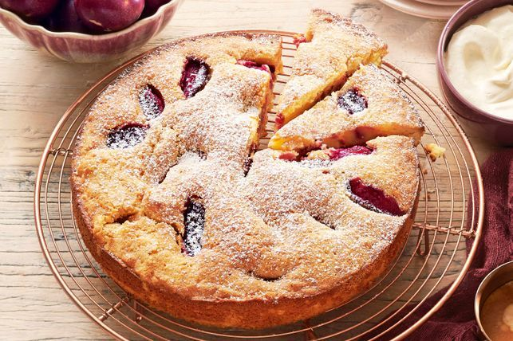

Almond cake with plums and cream

description:
Leave room for a slice of this moist, buttery cake with fresh plums and a perfectly chewy crust. It's a celebration, so there's no better time to indulge in a big dollop of the cardamom-scented whipped cream.
Ingredients:
- 150g unsalted butter, softened
- 2/3 cup (150g) plus 1 tbsp caster sugar
- 2 cups (240g) almond meal
- 3 Free Range Eggs
- 2 tbsp Grand Marnier or other orange liqueur
- 1 orange, finely grated zest only
- 1/4 tsp almond essence
- 1/4 tsp baking powder
- 1/4 tsp salt
- 1/2 cup (75g) plain flour
- 3 red-fleshed plums, pitted, each cut into 8 wedges
- 300ml ctn thickened cream
- 2 tbsp icing sugar, plus extra for dusting
- 1/2 tsp ground cardamom
Instructions:
- Preheat the oven to 160°C. Coat a 23cm round springform pan with butter.
- Using an electric mixer, beat the butter and 2/3 cup (150g) sugar on medium speed until light and creamy. Gradually beat in the almond meal. Add the eggs one at a time. Mix in the Grand Marnier, orange zest, almond essence, baking powder and salt. Reduce the speed to low and mix in the flour until just blended. Transfer the batter to the prepared pan.
- In a small bowl, toss the plum wedges with 1 tbs caster sugar. Gently place the plum wedges on top of the batter. Bake for 40 mins or until a toothpick inserted into the centre of the cake comes out with a few moist crumbs. Transfer the cake to a wire rack and allow to cool in the pan for 10 mins.
- Meanwhile, in a large bowl, whisk the cream, icing sugar and cardamom until fluffy. Remove cake from the pan and transfer to a cake plate. Dust the warm or room temperature cake with the extra icing sugar. Cut the cake into wedges and serve with the whipped cream.
Return To Home